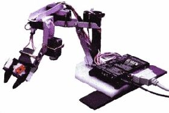

Manipulator of what ?
Overview
The Robotic Manipulator is another academic project to which I participated. As part of my Robotic Computer Control class, we were required, in groups of two, to write a program that would control a robotic arm. We would have to perform the inverse-kinematics calculations required to operate the 5 degree of freedom arm. We would also be required to use image processing techniques in order to extract from a photograph the position of an object to pick up. My partner for this project was Dominic Bergeron, a fellow computer engineer.
{kind=link}
Modelization
The first step of this project was to create a model of the robot. By finding Denavit-Hartenberg describing the robot, we would be able to find a transformation matrix that maps the base of the robot to the end of the gripper simply by specifying the angles of each motor. Since this robot had 5 degrees of liberties, we needed to find 5 sets of D-H parameters. The graph to the left illustrates how the parameters were defined.
Once the D-H parameters were defined and precisely measured, we began work on the mathematical model. To facilitate the calculations, we used the symbolic calculations power of MATLAB. This would allow us to easily recalculate the A matrices should an error turn up in our modelization. Each set of D-H parameter gave us one A matrix, which were then multiplied together to give the base-to-gripper transformation matrix. However, this matrix alone is of little use: it only allows us to find the position of the gripper given various motor angles. What we want is to be able to get the required angles to put on the motors to bring the gripper to a specific position. The calculation of angles from cartesian positions is called inverse kinematics.
{kind=link}
Usually, to perform the inverse kinematics of a robot's model, one puts the forward kinematics transformation matrix equal to a transformation matrix obtained from cartesian positions and then tries to solve the matrix for the various angles. While this is not too hard to do with 2 or 3 degrees of freedom, the calculations quickly become horribly complex as the number of degrees of freedom increase. While most groups decided to simplify their model to perform the calculations, we opted for an other solution: once again, we would use the symbolic calculation power of MATLAB.
By assigning variables to the angles as well as variables for the cartesian positions, we were able to use MATLAB to find 9 equations putting in relation the cartesian positions with the 5 motor angles. This allowed us to quickly solve the equations once the actual positions were available. This would give us 8 possible solutions: unlike with forward kinematics, the solutions for inverse kinematics are not unique. One cartesian position can give more than one set of motor angles -- just like one can grab an object and not always have the arm in the same position. To find which solution was correct, we eliminated any solution with imaginary parts and with motor angle values out of bounds. This would usually leave us with one, two or no solutions.
Image Processing
In addition to controlling the arm, we were required to make use of image processing techniques to automatically pickup and object that was put on the robot's workspace. This was done by capturing an image of the workspace using a digital camera. To automate the capture process, the IrfranView program was used. By drawing a referential in the robot's workspace and by always placing the robot at the same point in the workspace, we were able to calculate the position and rotation of an object in relation to the robot.
{kind=link}
First, we needed to extract the position of the referential from the captured image. This was done by using a process known as leveling. By cropping the image to the rough location in which the referential should be placed and by creating a two color image (only black and white), we were able to find the position of the corner of the referential as well as the length of said referential. The length would be used to perform the pixel to centimeters mapping. Once the position of the referential was known, it was removed from the image. We were then able to calculate the position and rotation of the object to be picked up using the same technique, though this proved to be a little more difficult.
The image on the left shows the referential and object detection in action: the red lines were added by the program to show where the referential is though to be and the two red dots on the object denote the center of the object and the closest edge to the center. The main problem encountered by using this localization technique was that any reflection of light on the referential or object would cause areas that should have been black to appear white in the picture. This would confuse the localization algorithm and give false data to the robot.
Demonstration
Demonstration of our project to the evaluator went perfectly. Aside from the initial calibration of the camera, the entire process was almost completely automated. After putting an object in the robot's workspace, the program would calculate the inverse kinematics equations, find the position of the referential and object, and generate a control script for the robot. The script would unfortunately need to be manually inserted in the Robix software. The script would make the robot move into position, pickup the object and move it to the other side of the workspace. If the object was outside of the robot's workspace, an error would be generated.
Additional Documents
Sample images taken by the camera: 1 2 3 4
{kind=link}
{kind=link}
{kind=link}
{kind=link}
Final project report (French only)